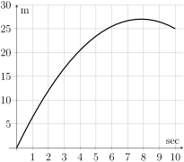
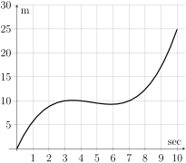
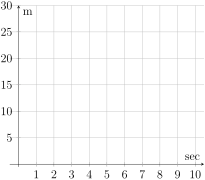

In a three-legged race, people compete in teams of two. In each team, one person’s left leg is tied to the other persons right leg. All teams then run from the start to the finish, competing to be the first team across the finish line.
The graphs below show three teams’ progress in a three-legged race at summer camp. The finish line for this race was 25 meters from the starting line.

Parabola facing down. Increases from \((0,0)\) to about \((8,27)\text{,}\) then decreases to \((10,25)\text{.}\) The horizontal axis is labeled seconds and the vertical axis is labeled meters.
(a)Team A
Graph starts at \((0,0)\) and increases to \((10,25)\text{.}\) It initially increases slowly, then speeds up. The horizontal axis is labeled seconds and the vertical axis is labeled meters.
(b)Team B

Graph increases from \((0,0)\) to \((3,10)\text{,}\) decreases to \((6,9)\text{,}\) then increases again to \((10,25)\text{.}\) The horizontal axis is labeled seconds and the vertical axis is labeled meters.
(c)Team C
Figure1.2.1.Progress in a 25 meter Three-Legged Race
(a)
Which team won the race? How do you know?
(b)
Describe each team’s progress during the race in words.
(c)
Which team ran the fastest? Explain your answer.
(d)
Team D started the race at the same time as the other teams, finished in 10 seconds, and ran forward toward the finish line at a consistent pace for the entire race. Sketch Team D’s progress on the axis below. How fast did Team D run?

Blank axes. The horizontal axis is labeled seconds and ranges from 0 to 10. The vertical axis is labeled meters and ranges from 0 to 30.
Figure1.2.2.Team D
Definition1.2.3.
The average rate of change of a quantity \(A\) with respect to a quantity \(B\) is
\begin{equation*}
\text{aROC} = \frac{\text{Change in } A}{\text{Change in } B} = \frac{a_2 - a_1}{b_2 - b_1}\text{.}
\end{equation*}
It is the slope of the line from the point \((b_1, a_1)\) to the point \((b_2, a_2)\text{.}\)
Activity1.2.2.
(a)
Find the average rates of change of Team A during the three-legged race over the intervals 0 to 10 sec, 0 to 3 sec, 3 to 6 sec, 7 to 8 sec, and 8 to 10 sec.
(b)
Work with your group to complete the table showing the average rates of change for each of the teams over each of the time intervals.
Table1.2.4.
Time Interval
Team A’s aROC (m/s)
Team B’s aROC (m/s)
Team C’s aROC (m/s)
Team D’s aROC (m/s)
0 to 10 sec
0 to 3 sec
3 to 6 sec
7 to 8 sec
8 to 10 sec
(c)
Write a sentence explaining what it means for an average rate of change to be negative.
Activity1.2.3.
Bailee thinks she is spending too much time on her smartphone, and has been trying to cut back. The table below shows how many hours she spent on her phone every day over the past week, where day 0 is the start of her intentional effort to reduce her smartphone usage.
Table1.2.5.Bailee’s smartphone usage
Day
1
2
3
4
5
6
7
Hours on Smartphone
7.5
7.25
6.75
6
4.5
(a)
What was the average rate of change in the number of hours Bailee spent on her smartphone from the beginning to the end of the week?
(b)
Bailee forgot to keep track of how many hours she spent on her phone on days 5 and 6. Use your average rate of change to estimate her smartphone usage on these two days.
(c)
If Bailee continues to decrease her smartphone usage at a steady rate, estimate how many hours she’ll use her smartphone on Day 10.
(d)
Write a sentence explaining how to use an average rate of change to estimate missing or new data values.
(e)
Is it possible that Bailee spent 6.5 hours on her smartphone on day 5? Explain your answer.
Activity1.2.4.
The graph below shows the population of Denver between 2010 and 2022.
Between 2010 and 2020, Denver’s population increased at a fairly steady rate from about 603,000 to 735,000. Population estimates are 620,000 in 2011, 635,000 in 2012, 649,000 in 2013, 665,000 in 2014, 683,000 in 2015, 696,000 in 2016, 705,000 in 2017, 716,000 in 2018, and 726,000 in 2019. Population dropped to about 711,000 in 2021, and then rose slightly to 713,000 in 2022.
Figure1.2.6.Data from Data Commons 2024, US Census Bureua, electronic dataset, Data Commons, viewed 2 Jul 2024, https://datacommons.org
(a)
Explain how the graph suggests that the rate of change of Denver’s population was fairly steady between 2010 and 2020.
(b)
Find three different estimates for the rate of change of Denver’s population between 2010 and 2020. Do your estimates support the rate of change being fairly steady during this time period?
(c)
Use one of your estimates from the previous part to estimate Denver’s population in 2022.
(d)
How does your estimate compare to Denver’s actual population in 2022? What real world event likely explains this difference?
(e)
Using a rate of change to estimate values outside of the data range available to us is called extrapolation. Use your response to the previous question to explain why extrapolation can be dangerous.